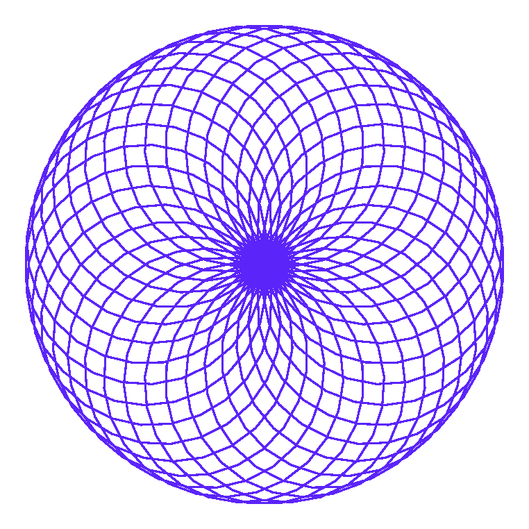

speed, tracer и update
Скорость анимации и итоговая геометрия рисунка — совершенно разные вещи. А для по-настоящему сложных узоров есть приём куда мощнее, чем просто speed(0).
speed() меняет анимацию, а не результат
artist.speed() управляет тем, как быстро
видно рисование — не тем, что в итоге получится. Финальный рисунок при
speed(1) и при speed(0)
получится геометрически абсолютно одинаковым — разница только в том,
видите ли вы сам процесс или сразу готовый результат. Статичная картинка физически не
может показать разницу в скорости — её видно только вживую, при запуске кода.
tracer() и update(): рисовать пакетами
Для действительно сложных рисунков (сотни и тысячи команд) даже
speed(0) может ощущаться медленным — экран обновляется после
каждой команды. screen.tracer(0) отключает
промежуточные обновления совсем, а screen.update() обновляет
экран один раз, вручную, когда рисунок готов:
команда → экран обновился
команда → экран обновился
команда, команда, команда, ...
update() → экран обновился ОДИН раз
import turtle
screen = turtle.Screen()
screen.setup(width=420, height=420)
screen.tracer(0)
artist = turtle.Turtle()
artist.hideturtle()
artist.pencolor("#5B24F9")
for i in range(36):
artist.circle(80)
artist.right(10)
screen.update()
screen.exitonclick()
screen.tracer(0) # отключаем промежуточные обновления
for i in range(36):
artist.circle(80)
artist.right(10)
screen.update() # один финальный апдейт — и весь узор появляется разомtracer(0) + update() может сделать рисование в разы быстрее — экран просто не тратит время на перерисовку после каждого шага.delay() — отдельная настройка
screen.delay() задаёт задержку в миллисекундах между
кадрами анимации — концептуально похоже на speed(), но
работает на уровне экрана, а не отдельной черепашки:
screen.delay(15) # миллисекунды между кадрами анимации
print(screen.delay()) # без аргумента — вернёт текущее значениеКлассическая ловушка отладки
tracer(0) и что-то нарисовать, но забыть update() — экран останется пустым! Это одна из самых частых и неочевидных ошибок с Turtle — код выполняется без единой ошибки, а на экране ничего нет. Подробнее разберём в разделе про отладку графики.